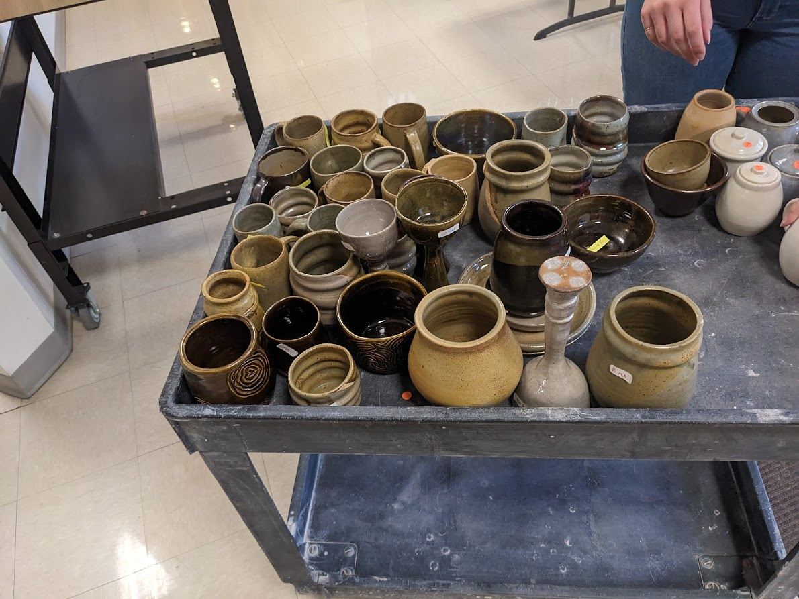
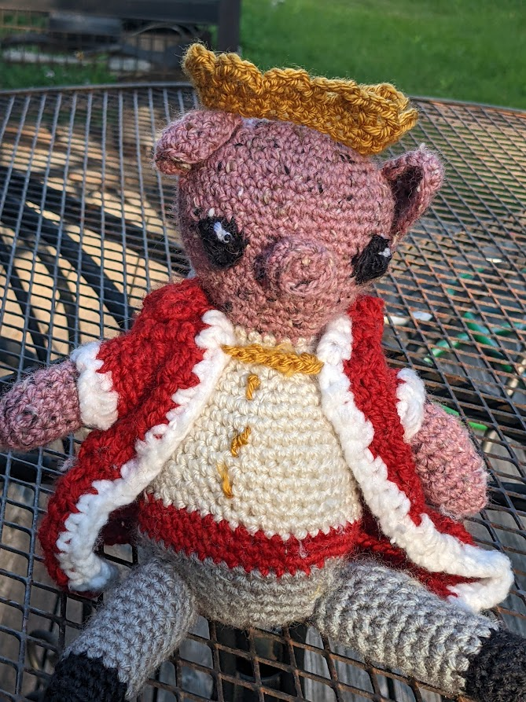

About Me
I am a 20 year old who ended up in computer science because she enjoyed technology and surprisingly loved coding.
I like ceramics

I like crochet

Reflection
I do the best by applying what I've learned in projects.
I am going to be a software developer because I like to problem-solve.
I apply my creativity from my various hobbies into my work.